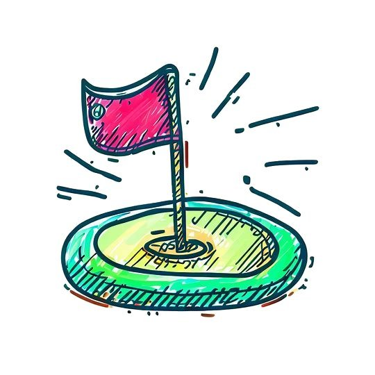

Squiggle Golf
Squiggle Golf är ett gratis 2D minigolfspel med en handritad, skissartad grafisk stil som du kan spela här i ditt webbläsare.
Med en slumpmässigt genererad daglig kurs, en uppsättning förgjorda kurser (kommer snart) och en anpassad nivåredigerare (kommer snart) finns det alltid enny utmaning väntar på dig i Squiggle Golf!